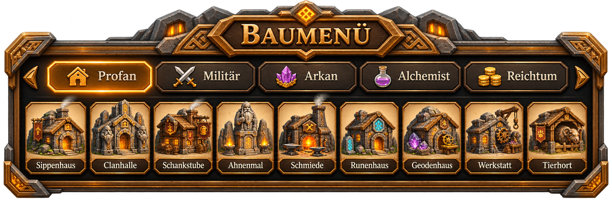

04 – Fraktionen
Fraktionen sollen eigenständig und wiedererkennbar sein – mechanisch, visuell und begrifflich. Die Tiefenschmiede sind die erste Referenzrasse.

Tiefenschmiede
- Zwergische Kultur
- Stein, Metall, Feuer, Runen, Geologie
- Schwerpunkt auf Schmiede, Runen und robustem Bau
Weitere diskutierte Völker
- Menschen
- Orks
- Dschungelweisen (Arbeitstitel)
- Graue Eminenzen
Namensregel Gebäude und Spezialsysteme sollen fraktionsspezifisch benannt werden. Ein generisches „Wohnhaus“ ist für die Tiefenschmiede weniger passend als ein „Sippenhaus“.